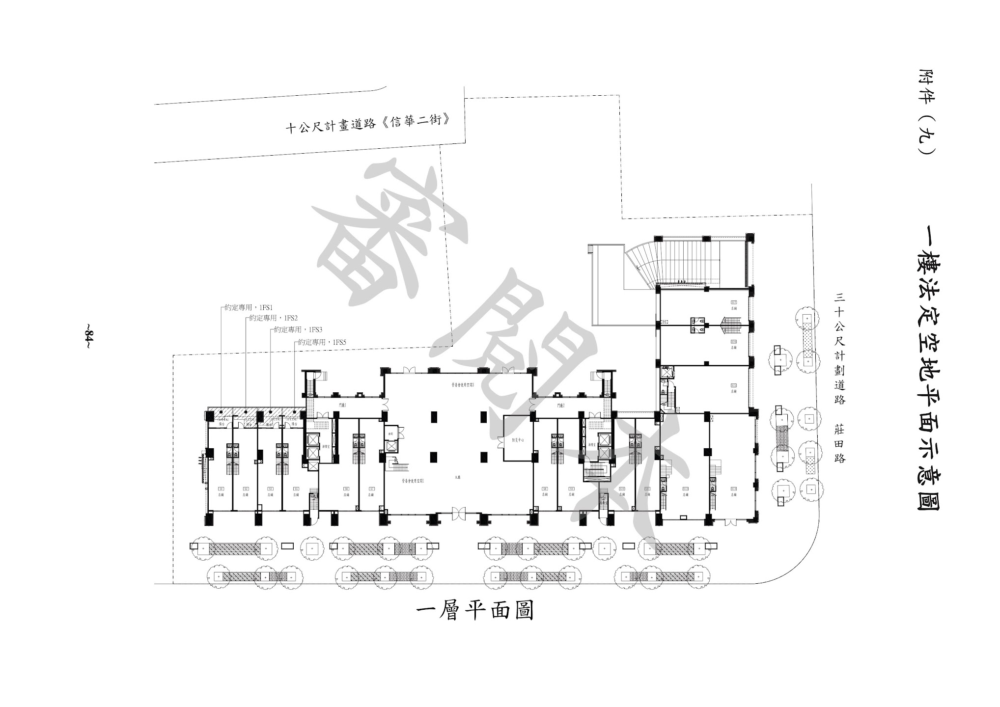

PRIVATE NEIGHBORHOOD NOTEBOOK
閱讀台灣
鄰居筆記
Google 授權並載入資料
登出 / 清除資料
匯入 CSV / 備份
下載位置備份
一樓
2F
3F
4F
5F
B1 停車場
B2
B3
−
適合畫面
＋
框選位置
一樓平面圖
原始圖面 · 拖曳移動 · 滾輪捲動

● 已核對圖面標記
▧ 待核對位置
Google 授權後可查看住戶資料。圖上虛線為待核對區域。
設定圖面位置
依原圖核對後，綁定資料中的戶別或車位。
位置名稱
對應類型
戶別
車位
公共空間 / 尚未對應
資料代號
戶別採「棟別＋戶別－樓層」，例如 A1-1。車位請含樓層。
我已核對位置與代號
刪除此標記
取消
儲存位置